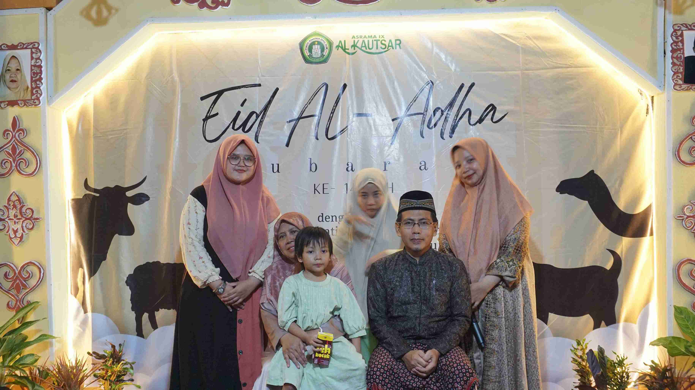
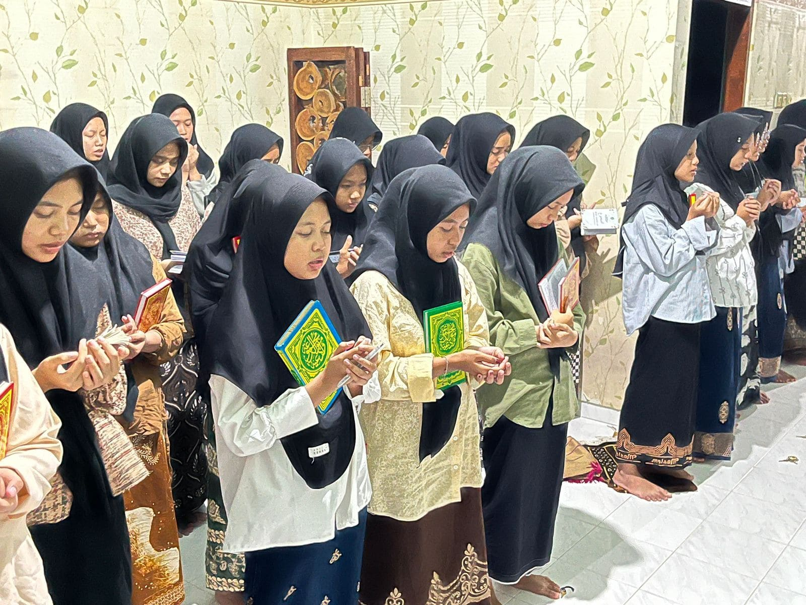
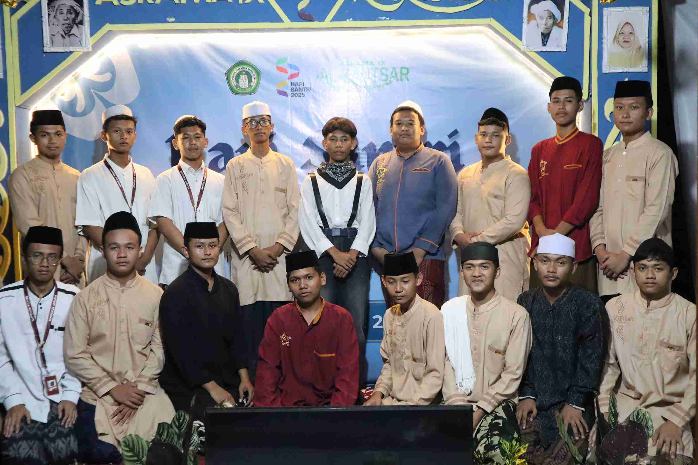
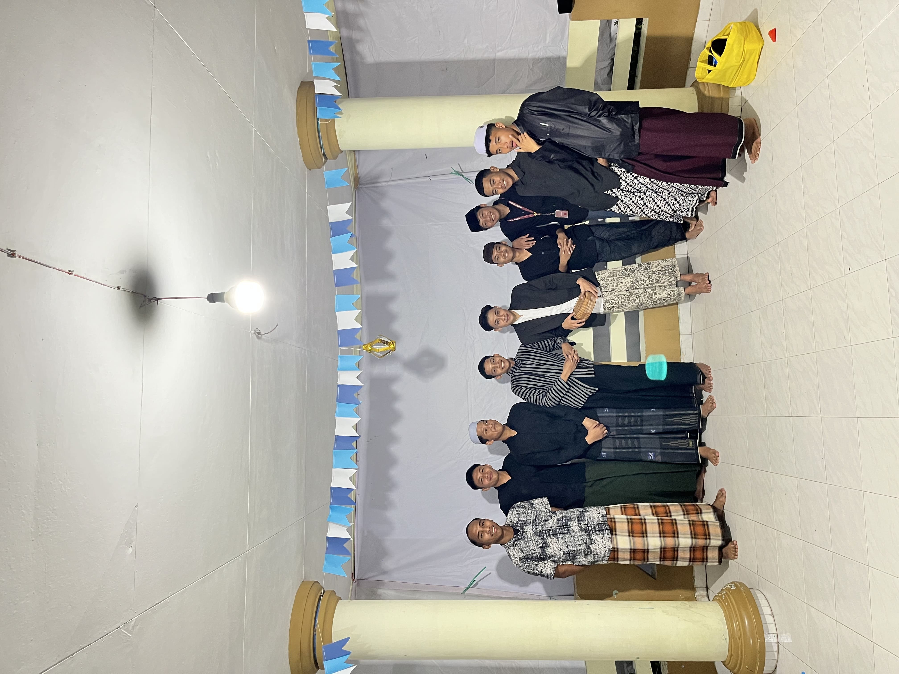
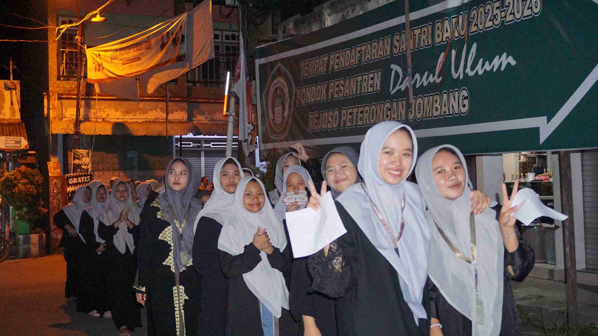
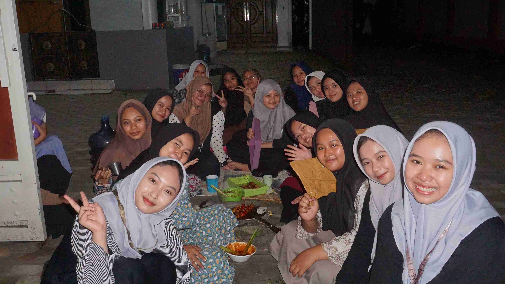
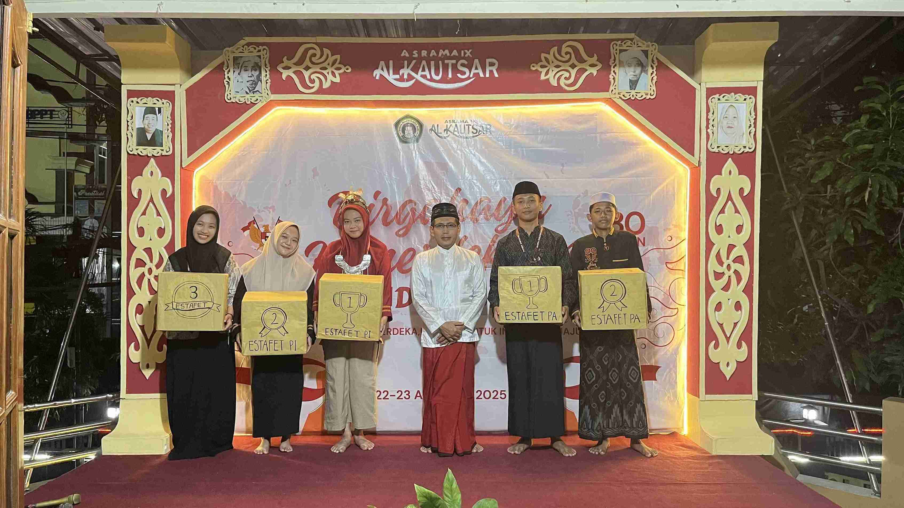

Religius, Berjiwa Kuat dan Kreatif.
Asrama Al Kautsar membentuk generasi yang religius, berjiwa kuat, dan kreatif. Setiap santri dibimbing agar ketika lulus, mereka menjadi pribadi yang sukses dan bermanfaat bagi sesama.
Program Asrama Al-Kautsar
Program asrama dirancang untuk membentuk karakter santri yang unggul, tidak hanya dalam aspek keilmuan, namun juga dalam kehidupan spiritual, akhlak, mental, dan kreativitas.
Melalui kegiatan rutin yang terarah dan berkesinambungan, santri dibimbing agar mampu menjadi pribadi mandiri, disiplin, dan berakhlak mulia.
Pembinaan Karakter Santri
Religius
Pembiasaan ibadah berjamaah, tahfidz, kajian kitab, dan adab dalam kehidupan sehari-hari.
Berjiwa Kuat
Pembentukan mental, kemandirian, kedisiplinan, serta rasa tanggung jawab sosial.
Kreatif
Pengembangan potensi dan bakat melalui seni, olahraga, karya inovatif, dan kegiatan ekstrakurikuler.

Galeri Kegiatan
Lihat beberapa momen kegiatan kami






Hubungi Kami
Mari bergabung bersama kami dalam menciptakan generasi terbaik
Informasi Kontak
Alamat
Asrama Al-Kautsar
Jombang, Jawa Timur
Telepon
(021) 1234-5678
info@alkautsar.sch.id
Jam Operasional
Senin - Jumat: 07:00 - 15:00
Sabtu: 07:00 - 12:00
Asrama Al-Kautsar
Jombang, Jawa Timur